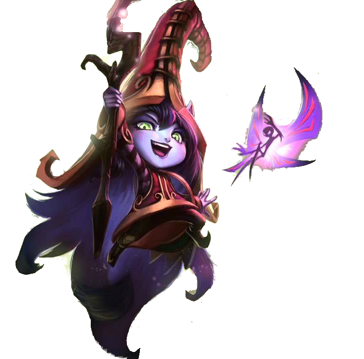
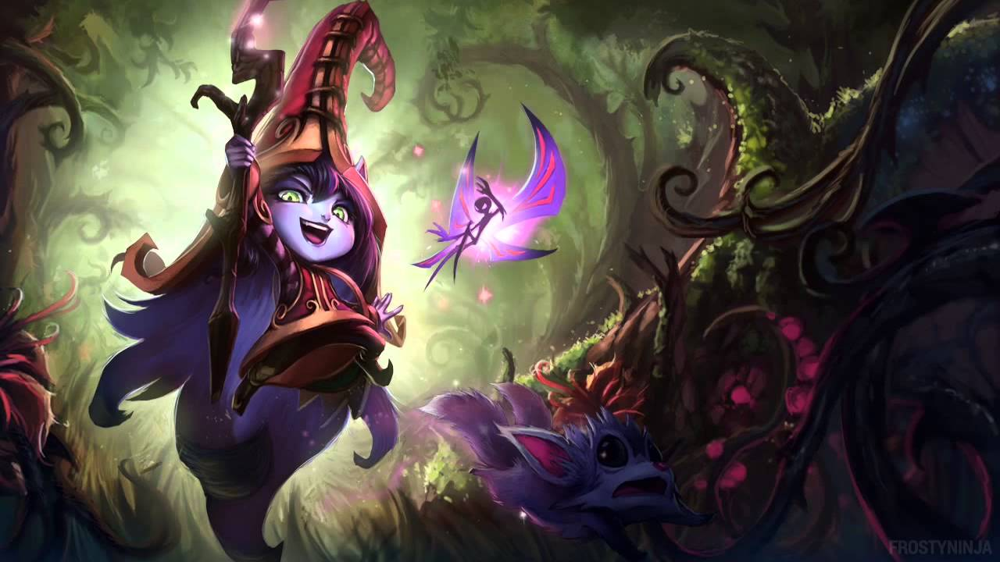

Official
Taiwan
China
Japan
Hero
Teemo
Lulu
Veigar
News
Questionnaire
The History of Yordle
The origin of this race on Runeterra is unknown but most would agree that Yordles resided on Valoran during its prehistoric times. At that time they were a nomadic race, travelling from one part of Valoran to the other. Records show they had presence in Ancient Freljord. They lived in tight neat family groups as well as near early humans. Because of their small stature, they were mostly prey for many animals. During prehistoric times they had tails and front canine teeth. Overtime as human civilizations advanced, so did yordles appearances and capabilities. To easily blend in human areas, yordles at one point started using an ability called "Glamour", which gave them the appearance of a small stature humans. To this day, most yordles stay inside the mystical place known as Bandle City, only venturing out on rare occasions. There are numerous gateways across Runeterra that yordles, and others more knowledgeable and perceptive, are able to use to get to in and out of Bandle City.
Click the image to view more detail

Lulu

←
→